NaviMate is the AI walking tour companion that writes your tour as you walk, whispers 3D spatial audio chimes toward nearby landmarks, and lets you interrupt mid-sentence by voice or camera.
🇮🇹 Firenze (Free Bundled Tour)🇬🇧 London (Free Bundled Tour)🇫🇷 Paris (Free Bundled Tour)🇮🇹 Rome (Free Bundled Tour)🇺🇸 New York (Free Bundled Tour)
🎬 Look Up, Walk Free — Official Film
Five Iconic Cities • Zero Screen Time
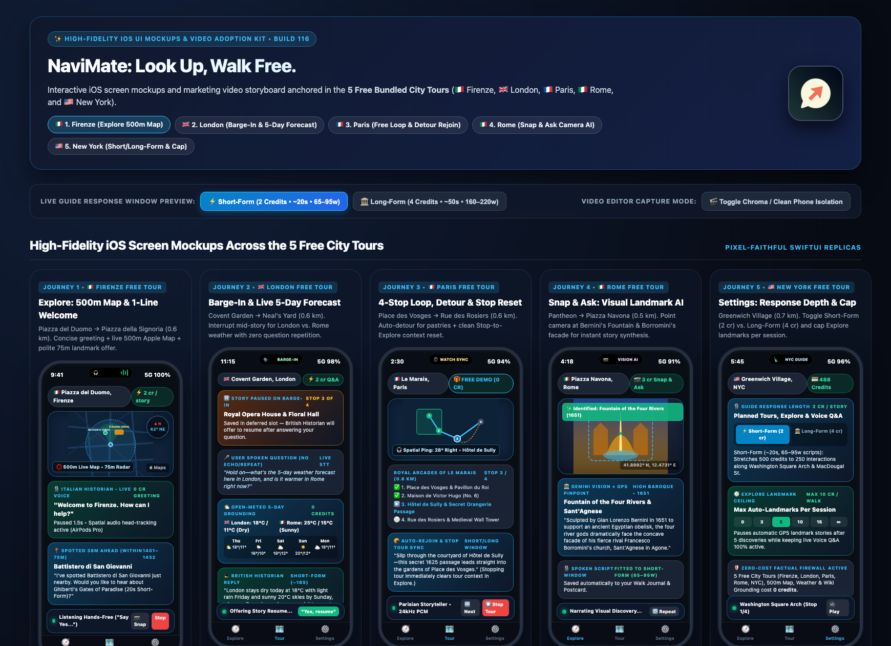
Five complete 4-stop audio walking tours in Firenze, London, Paris, Rome, and New York are bundled inside the app at $0 / 0 credits.
Why Walkers Switch to NaviMate
Designed for eyes-up exploration—so you experience the city around you instead of staring at a screen.
The Old Way
Screen-Staring & Rigid MP3 Tracks
Travelers in Firenze, London, Paris, Rome, or New York spend their walks staring down at blue dots on maps, pinching tiny Wikipedia text on street corners, or listening to static 4-minute MP3 museum tracks that cannot answer a single follow-up question when something catches their eye.
The NaviMate Way
Eyes Up, Hands in Pockets, Live Dialogue
Slip in your AirPods or Pixel Buds and start one of the 5 Free Bundled City Tours, generate a custom 100% offline-ready loop, or roam freely. NaviMate tracks your stride, whispers a 3D spatial chime toward landmarks within 100m, and lets you interrupt mid-sentence ("Hey Guide") to ask anything—or snap a photo of any facade for instant visual storytelling.
🎙️
Natural Barge-In & Story Resumption
Always-on voice supervisor detects speech on headphones or trigger phrases ("Hey Guide", "Excuse me") on speaker, halts narration in milliseconds, answers over Gemini Live, and politely asks: "Shall I carry on with this landmark?"
Feels like walking with a real local historian
⚡
0-Credit Local Reflex Commands
Instant on-device classification executes transport commands ("pause", "resume", "next stop", "repeat that", "where am I", "open maps") in 0 ms without touching the network or spending a single credit.
Keep your hands in your coat pockets at 0 credits
🏛️
Multi-Source Factual Grounding
Speculatively prefetches Wikipedia GeoSearch (300 candidates with two-stage declustering), Wikidata sitelinks, MediaWiki historical tables, and Open-Meteo 5-day forecasts while you speak.
Grounded architectural facts, dates & live weather
🎧
100% Offline-First Tour Planning
Pre-generates every stop script and downloads 100% of studio TTS narration during tour setup (🎧 Audio ready offline (N/N stops)), caching audio to disk for zero-signal playback.
Plan on hotel Wi-Fi; walk all day with zero roaming data
🧭
3D Spatial Compass Ping & AirPods Gaze
Combines AirPods head-tracking yaw on iOS and geomagnetic true-north declination on Android with a stereo-panned harmonic bell projected from the landmark's physical azimuth.
Turn your head toward the chime to spot the monument
🛡️
Free Demo Walks in 5 Cities & Fair Credits
Includes full demo walks in 5 iconic cities (Firenze, London, Paris, Rome, and New York) that are completely free to try. When using Walk Credits, reserve/hold/settle semantics ensure credits are only debited after confirmed audio delivery—never on network drops.
5 free city demo walks & zero subscription traps
4-Tab App Architecture
Identical feature parity across iOS (SwiftUI + Apple Watch + Live Activity) and Android (Jetpack Compose), with free-to-try demo walks in 5 cities included out of the box.
Tab 1 • Guided Tour
5 Free City Demo Walks + AI Planner
Demo Walks in 5 Cities (Free to Try): Full 4-stop guided audio walks in Firenze, London, Paris, Rome & New York included free to try at $0 / 0 credits.
Loop or A-to-B Commute: Walk a 30–180 min loop or walk from your hotel to your dinner reservation.
14-Block Active Tour UI: Auto-folding directions at 45m arrival, Story / Fun fact / Next walk tabs, Historical Era Time-Travel, and Proactive Detour Splicing.
Tab 2 • Explore
Spontaneous Free-Roam Radar
100m Forward Cone Radar: Spots real landmarks in your walking direction without chattering on every turn.
True-North & AirPods Gaze (GAZE): Tracks where you are looking or walking in real time.
Live Ambient Context: Enriches narration with live NOAA solar light phases (e.g., golden hour) and Open-Meteo weather.
Dialogue Floor Protection: Politely parks nearby discoveries while you are in a Q&A conversation.
Tab 3 • History
Offline Replay, Postcards & Reels
Saved Tours (0-Credit Replay): Replay any downloaded tour in Airplane Mode forever at $0.00.
Offline City Packs: 40 compressed .m4a stories across 5 iconic cities.
Visited Places Memory: Prevents repeat landmarks across Tour, Explore, and Camera Lens.
QR Walk Postcard & 9:16 Video Reel: Export a 540×675 postcard with a navimate://walk QR code or a 1080×1920 H.264 MP4 reel for Instagram, TikTok, or Shorts.
Tab 4 • Settings & Economy
Pacing, Voices & Accessibility
Short-Form (2 cr, ~20s) vs. Long-Form (4 cr, ~50s): Toggle story depth inline while walking or in Settings.
Explore Landmark Ceiling: Cap auto-stories per walk (0, 3, 5, 10, 15, or Unlimited).
30 Voices, 5 Personas, 5 Eras & 15 Languages: Classic Historian, Architect, Socialite/Gossip, Ghost, or Family guide.
Eyes-Free Accessibility Mode: Clock-face + step-count orientation and Sign & Plaque Reader in Camera Lens.
Complete App Tutorial: The 8 Hero User Journeys
Click any screenshot to inspect full-resolution captures from iOS (iPhone 18 Pro) and Android (Pixel 8).
Journey 1 • Onboarding & Free Bundled Tours
First-Launch Privacy Consent & Zero-Cost Bundled Demo Walk ("Couch-to-Walk")
Before a single GPS or microphone permission alert appears, a transparent Privacy & Data Consent Gate explains exactly what data is used and why. In four quick onboarding slides, pick your language (1 of 15) and tap Start Free Demo Tour to launch any of the 5 bundled city walks (Firenze, London, Paris, Rome, NYC) immediately at 0 credits.
Step-by-Step Instructions:
Accept the Privacy & Data Consent Gate: Launch NaviMate, review how GPS, voice audio, and photos are handled, and tap Agree and Continue.
Pick Your Language & Free City Demo: Swipe to Slide 4 of the onboarding carousel, choose your preferred Guide Language (15 languages), select Firenze, London, Paris, Rome, or New York, and tap Start Free Demo Tour.
Start Listening (0 Credits): NaviMate opens Tour → Active Route. Tap START GUIDED TOUR (or Play Story on the bottom bar) to hear pre-recorded studio narration offline. Tap Change City in the top demo banner anytime to try the other 4 free cities.
Choose a 30–180 minute loop (or a Point-to-Point commute to your destination), pick a theme (General History, Hidden Gems & Secrets, Architecture & Design, Local Food & Culture, or a custom topic), and tap Start Planning AI Tour for 0 credits. Review and reorder stops on the Draft sheet, then tap Confirm & Generate Audio (6 credits/stop) to download 100% of the tour audio for offline walking.
Step-by-Step Instructions:
Set Your Starting Point & Loop vs. Point-to-Point: On Tour → Plan New Tour, keep Use My Current LocationON (or turn it OFF and type any city/hotel in Or type city/address). Keep Finish Tour Where I StartedON for a circular loop, or toggle it OFF to enter a Point-to-Point Destination.
Choose Duration, Theme, Language & Must-See Stops: Pick a Target Duration (30m–180m), select a Tour Theme card (or type a custom request in Or describe what you'd like to see…), choose your Guide Language, and optionally list Must-See Places.
Preview & Customize the Route Draft (0 Credits): Tap Start Planning AI Tour. In the Review Route sheet, add places via Add a place... or by tapping the map, swipe left on any stop to delete it, or tap Edit to drag-and-drop stops into your preferred walking order.
Confirm & Download Offline Audio (6 Credits / Stop): Tap Confirm & Generate Audio to write all stop stories and pre-download 100% of the narration to your phone (🎧 Audio ready offline).
During a guided walk, NaviMate announces street-by-street turns. Arriving within 45m of a stop automatically folds the directions card and opens the segmented Story, Fun fact (Insider Tips), and Next walk (Nearby) tabs. Use the split Pause/Resume and Stop controls anytime without losing your progress, switch Historical Eras on the fly, or accept a Proactive Detour when a hidden gem is spotted nearby.
Step-by-Step Instructions:
Start Your Walk: On Tour → Active Route, tap START GUIDED TOUR. Follow the expanded Walking directions card (or tap Open Route in Apple / Google Maps) and pocket haptic turn cues.
Arrive Within 45m & Explore Stop Tabs: Stepping within 45m of the stop shows ✓ You're here, folds the directions card, and starts the story. Switch between the Story, Fun fact, and Next walk tabs anytime.
Pause / Resume or Add a Detour: Tap PAUSE (right half of top button) for a coffee break and RESUME to continue mid-sentence. Tap Anything interesting nearby? (0 cr to check) on the purple Detour Card and tap Add to route (6 cr) to splice a hidden gem into your walk.
Navigate Stops & Finish: Use the pinned bottom bar (<, Play Story / Stop Audio, Next >), and tap Complete ✓ on the final stop to log your walk and open your Souvenir Walk Postcard.
Want to wander without a fixed route? Open Explore, select Short-Form (2 cr) or Long-Form (4 cr), and tap Start Exploring. Using true-north heading and AirPods head-tracking (GAZE), NaviMate scans a 100m forward cone, plays a 3D spatial chime from the landmark's direction, and weaves live solar light and weather into the narration.
Step-by-Step Instructions:
Pick Your Depth & Session Cap: Open Tab 2 (Explore) and select Short (2 cr) (~20s) or Long (4 cr) (~50s) on the Depth card directly below the top button. Optionally set your Explore Landmark Ceiling in Settings (0, 3, 5, 10, 15, or Unlimited).
Tap START EXPLORING: Both the 75m–100m forward walking cone and continuous hands-free voice listening activate immediately.
Follow the 3D Spatial Chime & Gaze Radar: With AirPods Pro/Max, the radar tracks your head direction (GAZE • <deg>° • 500M MAP); otherwise it uses your phone's compass (FORWARD SCAN). Turn toward the 3D chime to spot each landmark!
Pause or End Session: Tap PAUSE / RESUME anytime, or tap END SESSION when finished to save the walk to your Walk Journal.
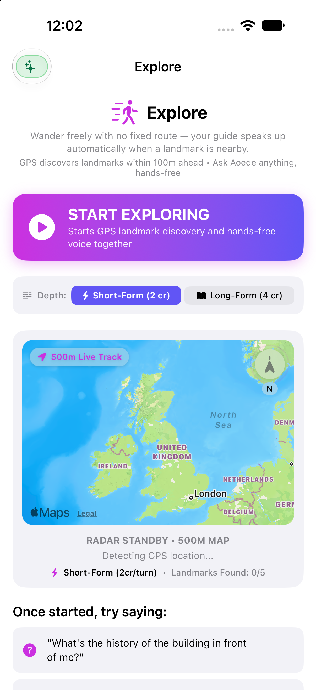
iOS1. Explore Radar (500m)
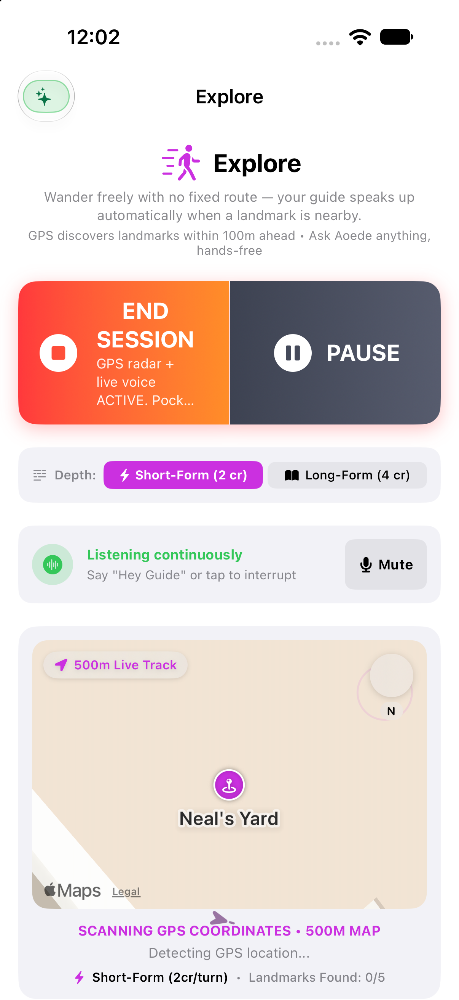
iOS2. Forward-Cone Discovery
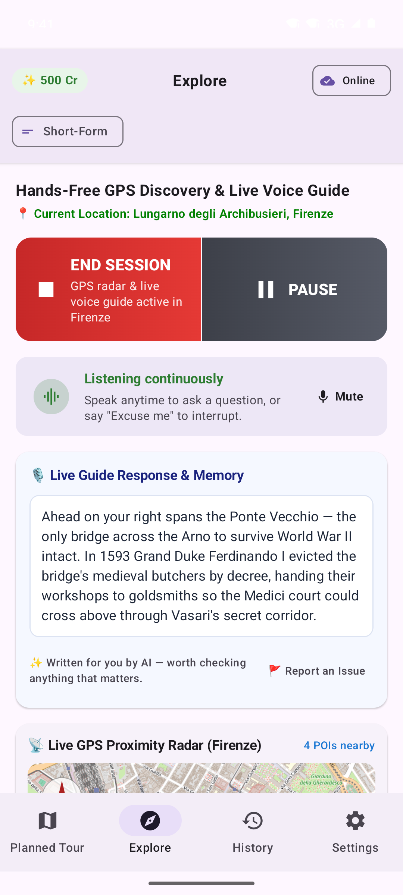
AndroidExplore Mode & Radar
Journey 5 • Hands-Free Voice Q&A
Full-Duplex Voice Interruption, Live Grounded Answers & 0-Credit Reflex Commands
Speak naturally while wearing headphones—or say "Hey Guide" / "Excuse me" on speaker—to interrupt narration mid-sentence. NaviMate halts playback immediately, answers your question using grounded Wikipedia and live weather data over Gemini Live, and asks if you'd like to resume the interrupted landmark story.
Step-by-Step Instructions:
Interrupt Mid-Sentence (Barge-In): Say your trigger phrase ("Excuse me", "Hey Guide", "Stop", or "Wait"—or speak directly on headphones if trigger phrase is toggled OFF in Settings) followed by your question (2 cr Short / 4 cr Long).
Resume Interrupted Stories Free (0 Credits): After answering your question, the guide asks: "Would you like me to carry on with <Landmark>?" Say "Yes" or "Carry on" to finish the story at 0 credits.
Use 0-Credit Voice Reflex Commands: Say "pause", "resume", "next stop", "previous stop", "repeat that", "where am I", or "open maps" for instant on-device control at 0 credits. Tap Mute on the mic bar anytime when chatting with friends.
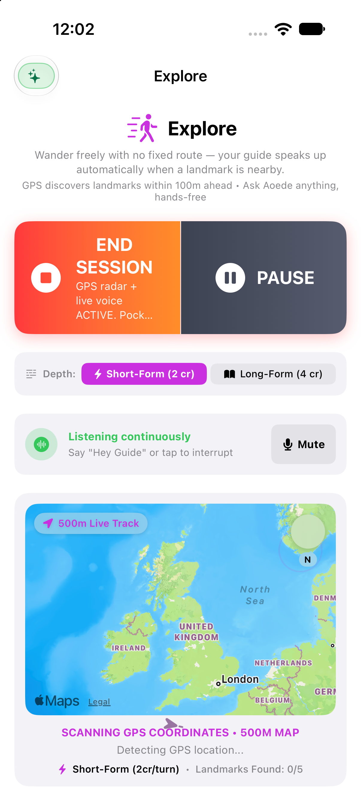
iOS1. Voice Listening Bar
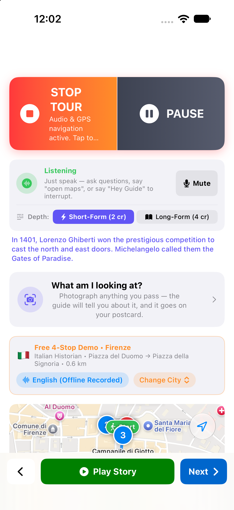
iOS2. Grounded Live Voice Q&A
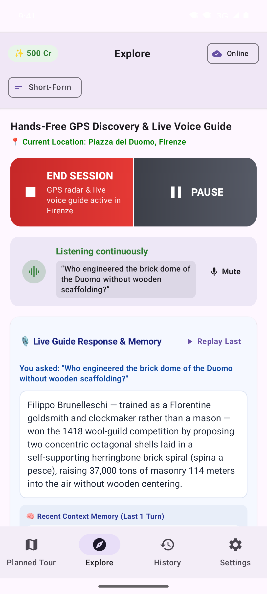
AndroidHands-Free Voice Q&A
Journey 6 • Camera Landmark Lens
Snap & Ask Multimodal Visual Identification on Both Tour & Explore
Spot an intriguing facade, statue, or plaque? Tap the camera icon (Snap & Ask) during any Tour or Explore session. Combining Gemini Vision with a 250m Wikimedia candidate radius, NaviMate identifies the exact building, speaks its story, and saves your photo for your Walk Postcard and 9:16 Recap Reel.
Step-by-Step Instructions:
Tap "What am I looking at?": Located directly below the microphone status bar on both Active Route and Explore (automatically pauses narration and mic listening while the camera is open).
Snap the Photo (2 cr Short / 4 cr Long): Frame any building, statue, monument, or historical plaque and tap the shutter button.
Listen & Save for Your Postcard: Your guide identifies the exact landmark using GPS + Wikimedia candidates within 250m (or reads plaques aloud in Eyes-Free Accessibility Mode) and saves your photo for your Souvenir Walk Postcard and 9:16 Video Reel.
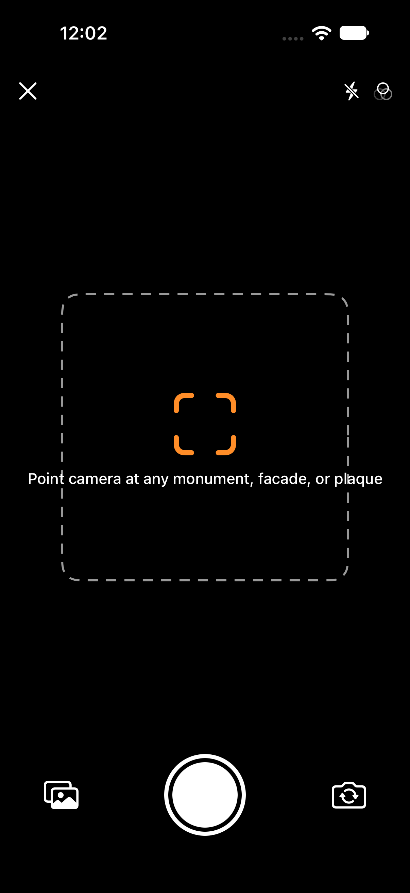
iOS1. Camera Viewfinder
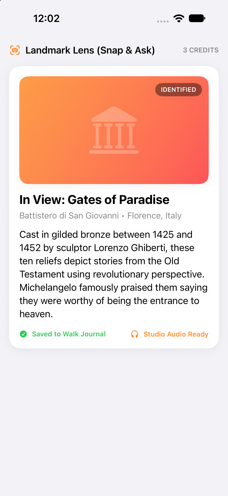
iOS2. Identified Landmark Story
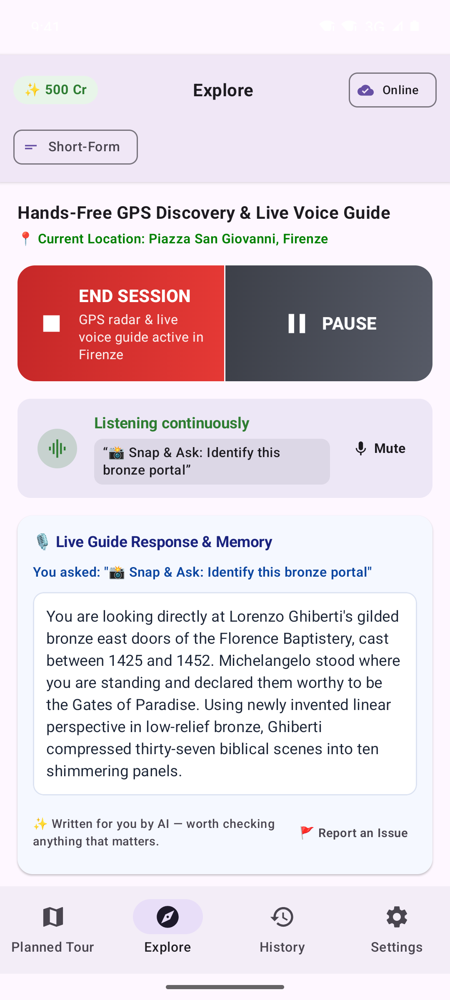
AndroidSnap & Ask Lens
Journey 7 • History, Postcards & 9:16 Video Reels
0-Credit Offline Replay, Walk Journal, QR Postcards & Social Video Reels
Open the History tab to replay any saved tour offline for 0 credits, browse your cross-mode Visited Places memory, or export a Souvenir Walk Postcard (with a navimate://walk QR code) and a 9:16 Illustrated Walk Recap Reel (1080×1920 MP4) pairing your route map, Lens photos, and Wikimedia Commons photography.
Step-by-Step Instructions:
Replay Any Saved Tour Offline (0 Credits): Open Tab 3 (History) → Saved Tours and tap Load Tour on any saved walk.
Manage Visited Places Memory: Scroll to Visited Landmarks and tap Browse & Manage All Visited Places to swipe-to-forget individual places by city so they can appear in future tours again.
Write Walk Notes & Export Postcards / 9:16 Reels (0 Credits): Switch to Walk Journal, tap any walk to write personal notes, and tap Make a postcard (or Postcard on any Saved Tour) to share a 540×675 QR Walk Postcard or tap Export 9:16 Video Reel for a 1080×1920 MP4 video.
Customize your guide with 30 Studio Voices, authentic regional accents, 5 Personas (Classic, Architect, Socialite/Gossip, Ghost, Family), 5 Historical Eras, and 15 Languages. On iPhone and Apple Watch, Lock Screen Live Activities, Dynamic Island, and wrist-native turn cues keep your walk effortless.
Step-by-Step Instructions:
Set Credit & Depth Guardrails: In Tab 4 (Settings), choose Short-Form (2 cr) or Long-Form (4 cr), set your Explore Landmark Ceiling (0, 3, 5, 10, 15, or Unlimited), and keep Prevent Repeat Landmarks & StopsON (SAVES CREDITS).
Choose Voice, Accent, Character & Era: Pick from 30 Guide Voices + Accent and tap Preview, select a Character (Classic Guide, The Architect, The Local Gossip, The Ghost Hunter, Family & Kids), and pick a Time Travel era (Today, Before 1500, 1500–1800, The 1800s, The 1900s).
Configure Navigation, Accessibility & Guide Memory: Toggle Hands-Free Voice Directions, Haptic Turn Cues, Directional compass chime, Eyes-Free Accessibility Mode, and Require trigger phrase on headphones, or inspect What My Guide Knows About Me.
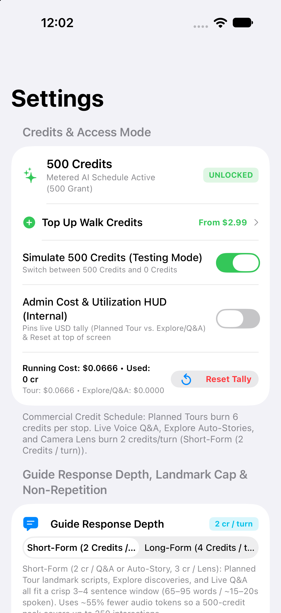
iOS1. Voices, Accents & Credit Controls
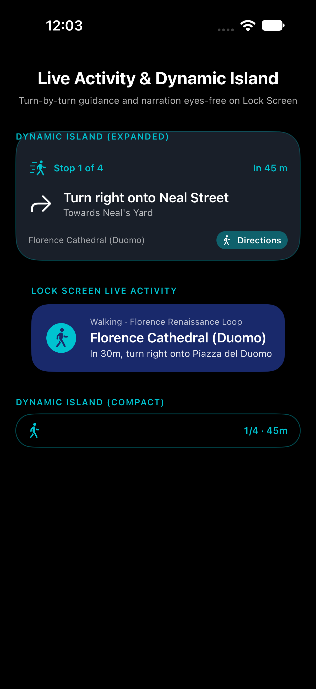
iOS2. Lock Screen Live Activity
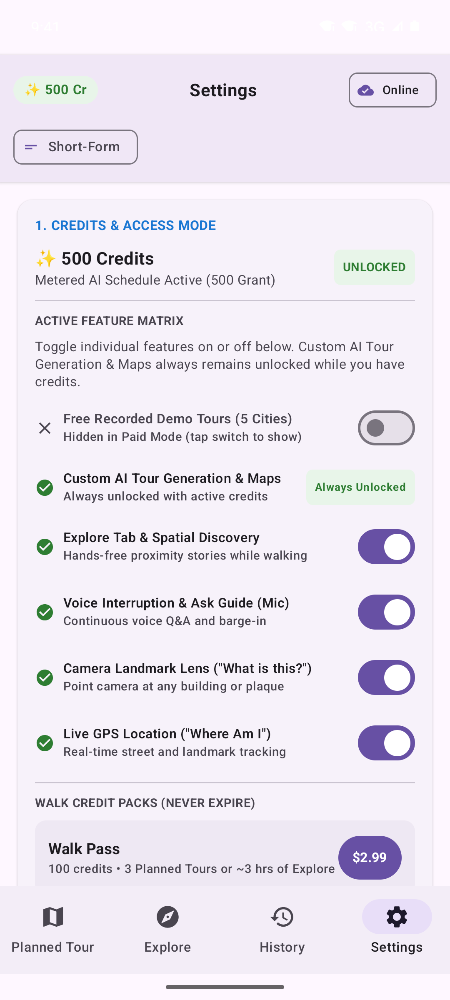
AndroidVoices, Languages & Credit Controls
Pay-As-You-Go Walk Credits & Credit Optimization Guide
No recurring subscriptions. Tap the top-left Credits pill on any tab (or open Settings → Top Up Walk Credits) to buy non-expiring Walk Credits only when you travel.
Walk Pass
100 Walk Credits
$2.99 USD • Never expires
3–4 custom 4-stop Planned Tours (with 100% offline audio) or up to 50 Short-Form Explore stories & Q&A turns.
Most Popular
Weekend City Pack
250 Walk Credits
$6.99 USD • Never expires
8–10 custom Planned Tours or up to 125 Short-Form Explore stories, voice Q&A turns & Camera Lens snaps.
Best Value
Vacation Pass
500 Walk Credits
$14.99 USD • Never expires
16–20 custom Planned Tours or up to 250 Short-Form Explore stories & Q&A turns across a multi-city trip.
Globetrotter Pack
750 Walk Credits
$19.99 USD • Never expires
25–30 custom Planned Tours or up to 375 Short-Form Explore stories & Q&A turns.
Feature / Action
Short-Form Mode (Default ~20s)
Long-Form Mode (Deep Dive ~50s)
Always Free (0 Credits)
5 Bundled City Tours (Firenze, London, Paris, Rome, NYC)
0 Credits
0 Credits
40 pre-recorded studio stories included free on install
Custom Planned Tour Generation
6 Credits / Stop (includes offline TTS download)
6 Credits / Stop (includes offline TTS download)
Unlimited Stage-1 Route Draft Previews & Saved Tour Offline Replays
Explore Auto-Story & Live Voice Q&A
2 Credits / Turn
4 Credits / Turn
Local voice reflex commands (pause, resume, next stop, repeat, open maps)
Camera Landmark Lens (Snap & Ask)
2 Credits / Photo
4 Credits / Photo
Souvenir QR Walk Postcards & 9:16 Video Recap Reel exports
Mid-Walk Detour Splice (Add to route)
6 Credits / Detour
6 Credits / Detour
Checking for nearby detours (Anything interesting nearby?) is 0 Credits
Budget / Low-Burn Playbook
How to Minimize Credit Consumption
Keep Depth on Short-Form (2 cr): Cuts every Explore story, voice Q&A reply, and Camera Lens photo cost in half (2 cr instead of 4 cr).
Set an Explore Landmark Ceiling: In Settings, pick 3 Landmarks (max 6 cr auto-stories per walk) or 0 (Q&A Only) (0 cr auto-stories; pay only when you ask a question or snap a photo).
Keep "Prevent Repeat Landmarks & Stops" ON: Automatically skips landmarks you've already visited across Tour, Explore, and Camera Lens so you never pay twice for the same place.
Mute Mic or Use Trigger Phrases When Chatting: Keep Require trigger phrase on headphonesON, tap Mute on the mic bar, or toggle Voice Interruption & Ask Guide (Mic)OFF in the top-left Credits & Access sheet when talking with companions.
Preview Routes Free & Replay Saved Tours: Swipe left on extra stops in the 0-creditReview Route sheet before generating audio, use 0-credit voice commands ("pause", "next stop", "repeat that"), and replay downloaded tours from History → Saved Tours for 0 credits.
Historian Deep-Dive Playbook
How to Maximize Storytelling Depth & Discovery
Switch Depth to Long-Form (4 cr): Expands every Explore discovery, voice Q&A answer, and Camera Lens story to 4–6 richly detailed sentences (~45–55 seconds).
Set Explore Landmark Ceiling to 15 or Unlimited: Let the guide narrate every notable square, palace, church, and hidden courtyard on a long afternoon wander.
Enable Proactive Detours: Toggle Let the guide suggest detoursON in Settings → Detours to discover standout hidden gems within 600m of your route.
Combine a Guide Character with Time Travel: Pair The Architect, The Local Gossip, or The Ghost Hunter with Before 1500, 1500–1800, The 1800s, or The 1900s.
Snap 3+ Landmarks with Camera Lens: Tap What am I looking at? during your walk so your own photos headline your Souvenir Walk Postcard and 9:16 Video Recap Reel.